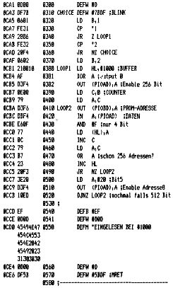

80-Bus Journal |
April/Mai/Juni 1984 · Ausgabe 2 |

Bei Uwe Brockmöller
läuft die Floppy inzwischen in Double Density bei
2MHz !!!
Jörg Wittich hat uns eine Korrektur zur Schaltung „Grauwerte“ in Heft 12/83 geschickt. Das IC, das im Kästchen zum Nachschalten an den Original- Generator erwähnt wird, soll natürlich ein 74LS244 sein.
Zum Programm TEXTCASS aus Heft 1/84 erreicht uns gerade eine Modifikation von Peter Brendel, die es ermöglicht, auf einfachste Art Texte auf Diskette abzuspeichern. (Sehr gut geeignet für Ihre Beiträge zum 80-Bus Journal).
Folgende Zeilen sind zu ändern bzw. einzufügen:
490 RST PRS 500 DEFM "S TEXT.TXT 505 DEFB 0 590 JP #A100 ;JP EMDOS
Wenn Sie BASIC im RAM laufen lassen, müssen Sie auf jeden Fall einen Wert für MEMSIZE eingeben, sonst spielt das BASIC verrückt. Achten Sie darauf, daß EMDOS im gesicherten Speicherbereich bleibt.
|
Dieter Oberle |
Eberhard Horch |
|
Karl Schulmeister |
Wolfgang Mayer-Gürr |
|
Michael Bach |
Jörg Wittich |
|
Dieter Metzler |
Gerhard Aßmann |
|
Andreas Zippel X |
Uwe Tepp |
|
Gerhard Klement |
|
|
David Kastrup |
|
|
Wolfgang Sauerbrey |
|
|
Uwe Brockmöller |
|
|
Klaus Mombaur |
|
|
Constantin Olbrich |
|
| Seite 51 von 52 |
|---|